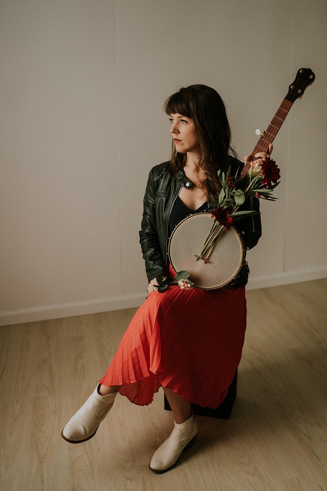

About
Hi, I'm Hannah Standiford
The way that we listen is fundamentally shaped by the types of attention that we give both to music and the world around us. As a scholar-practitioner, I firmly believe in the power of integrating scholarly inquiry and practical experience. Studying a string-band music called kroncong in Indonesia means learning how to play instead of observing it from a distance. Teaching students about bomba y plena from Puerto Rico means working with culture bearers to give students the opportunity to embody the rhythms of this music. Studying consent practices in the swing dance community in Pittsburgh means becoming a part of the community and dancing with them. Learning Appalachian ballads means sitting knee to knee with teachers, learning each song one phrase at a time the way they learned from their own teachers. Approaching music this way trains deep attention and demands embodied listening.

As an Assistant Professor of Music at Allegheny College, I guide students to engage with music through creative projects and collaboration. At Allegheny College I teach world music, Western Art music, and direct the gamelan ensemble, a performing group that is open and accessible to students with no prior music experience. I host a visiting guest artist from Indonesia every semester to work with my students including renowned practitioners Peni Candra Rini, Danis Sugiyanto, and Heri Purwanto. During my time at the University of Pittsburgh, I also taught jazz history and introductory courses in gender, sexuality, and women’s studies.
Teaching at the collegiate level is enriched by academic research and I often find ways to share my research in the classes that I teach. My primary research focuses on a repertoire of Indonesian songs known as langgam Jawa. I look at the way that women’s voices have been used in government projects of modernization in Indonesia. For instance, in 1997 an album called Waringin Sakti featuring one of the most famous women singers of langgam Jawa was released to promote the political party associated with the authoritarian rule of Indonesia’s second president. I bring my findings into discussions during my world music classes, guiding students in investigating the intersections between music and politics. I also contend with issues of voice quality, studying the way that women singers in Central Java learn how to code switch between the different genres in which langgam Jawa songs appear. My initial findings affirm that vocal quality, like gender, manifests through repeated performance as opposed to being a result of an innate essence or a clue to interiority. This topic is one that I connect with theories of gender as performance for discussions in the gender and sexuality classes that I teach.
As a creative, my songwriting and arrangements are informed by a range of traditions. I have over 20 years of experience studying Javanese and Balinese gamelan and Indonesian kroncong, supported by a Fulbright-Hays Doctoral Dissertation Research Award, a Fulbright Student Research Award, and a Darmasiswa scholarship. My undergraduate work in classical guitar performance was foundational for my more recent focus in old-time clawhammer banjo and Appalachian ballads. I have studied for several years with Elkins, WV native Ben Townsend and was also supported by a Traditional Arts Apprenticeship grant from the Pennsylvania Council on the Arts to study with Ellen Gozion of the Early Mays.